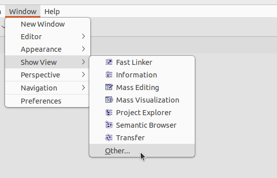
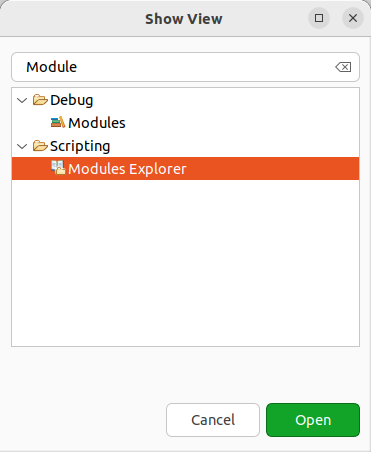
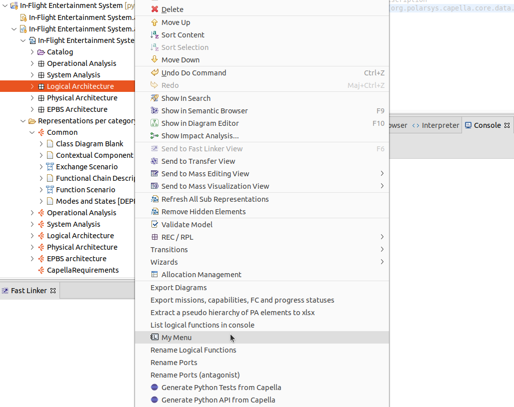
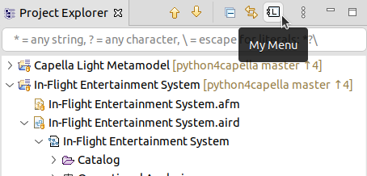
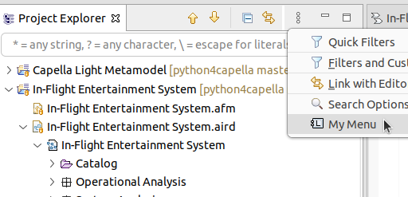
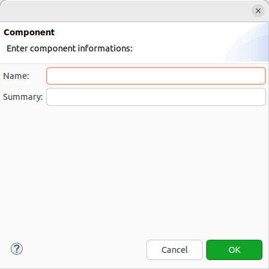

This section covers some tips and tricks to help you understand and trouble shoot Pyton4Capella.
This section explains how the Python layer of Python4Capella and Java layer of Capella work together.
The simplified Capella API implemented by Python4Capella is a Python layer above the complete Java Capella metamodel. So it’s possible to access the Java metmodel if needed from the Python API. It can be handy if some methods are missing from the simplified API and you know the Java metamodel of Capella.
The class
JavaObject has a reference from the Python object to the Java object
JavaObject.get_java_object() and all classes from the API extends this class. The object returned by this method is the corresponding Java object.
Suppose you have a
LogicalComponent, you can either call the Python API:
myLogicalComponent.get_name()
or the corresponding Java method directly:
myLogicalComponent.get_java_object().getName()
Note: if you need to pass a parameter to a Java method that comes from the Python API, you will need to first get its Java object:
someObject.get_java_object().someMethod(otherObject.get_java_object()).
You can also get an object returned by a Java method and want to wrap it in a Python object. To do so, you only need to pass it to the constructor of the corresponding Python class:
myLogicalComponent = LogicalComplenent(java_logical_component)
Then you can use myLogicalComponent like any other Python object from the API.
If you don’t know the type of the returned Java object, you can get the matching class and create an instance:
cls = EObject.get_class(java_object)
if cls is not None:
my_object = cls(java_object)
# use my_object here
Note: you can also use a super type from the Python API if the specific type of the Java object doesn’t exists in the Python API. For instance imagine the LogicalFunction doesn’t exists in the Python API, you could use
my_function = Function(my_java_logical_function). You will not have access to specific methods of LogicalFunction unless you use directly the Java object.
When you call a constructor from the Python API without a Java object as parameter, the Java object is created if possible, otherwise an error will be raised:
my_LogicalFunction = LogicalFunction()
Most commons errors come from this navigating fron Python to Java and vise versa. You can check the Common Runtime Errors for more details.
You can use the Sirius interpreter, select an element and then use the following AQL expression to list all EStructuralFeatures:
self.eClass().eAllStructuralFeatures
You can then use the feature name to get the Java method name, for instance with a feature named someFeature:
You can also check the [Capella metamodel](https://github.com/eclipse/capella/tree/master/core/plugins/org.polarsys.capella.core.data.gen/model) or the [source code](https://github.com/eclipse/capella/tree/master/core/plugins/org.polarsys.capella.core.data.gen/generated/org/polarsys/capella/core/data).
You can also open a given Java class in your environment and navigate it using the
JDT. For this you will need to
enable Development capabilities.
Copying a
CapellaElement can be needed to keep most of the features of an object and only want to change a few one. Also not all features are exposed thru the Python simplified API, and making a copy of an existing
CapellaElement will make sure to keep all values. You can copy a
CapellaElement with the following code:
my_copy = EObject.copy_e_object(my_CapellaElement)
If you need to copy a collection of
Capella and want to keep references between copied objects, you can use the following method and pass a collection of
CapellaElement:
my_copies = EObject.copy_all_e_objects(some_CapellaElements)
A convenient way to navigate in the Capella model as a Capella user is the Semantic Browser. Python4Capella provides methods to list and execute queries from the Semantic Browser.
To list available queries on a Capella element you can use:
myCapellaElement.get_available_s_b_queries()
You can also use:
available_query_names(myCapellaElement)
Both methods will list the name of all available Semantic Browser queries for the given element.
You can then use the name of one of the query to call it with:
myCapellaElement.get_query_result('query name')
You can also pass the expected result class if needed:
myCapellaElement.get_query_result('query name', LogicalComponent)
or:
capella_query_by_name(myCapellaElement, 'query name')
You can also pass the expected result class if needed:
capella_query_by_name(myCapellaElement, 'query name', LogicalComponent)
EASE modules provides methods to interact with the Eclipse platform which Capella is build on.
To list all available EASE module and see what thes provide, you can open the Module Explorer view:


If you want to use your scripts in an interactive way opposed to batch mode, you will need to contribute to the Capella user interface. This section will provides example of integrations with menu, toolbar and mutch more. Each example comes with a sample code.
It’s possible to contribute a popup menu to Capella that will run your script by adding the following header at the beginning of your script:

# name : My Menu
#image : platform:/plugin/org.polarsys.capella.core.sirius.analysis/icons/full/obj16/LogicalComponent.gif
# script-type : Python
# description : My Menu Description
# popup : enableFor(org.polarsys.capella.core.data.capellacore.CapellaElement)
The name define the name of the menu, and image its icon. The script-type is the scripting language used, Python in the case of Python4Capella. The description is the description of the menu. popup tells that we want a popup menu on objects with the type CapellaElement. The type is the qualified name of the Java class. You can find the qualified name of the Java class in the Python class documentation.
You can find more ways to contribute your scripts in the EASE documentation.
You can then get the selected element with the following code:
selected = CapellaElement(CapellaPlatform.getFirstSelectedElement())
You can adapt the type according to the type defined in the header. You can also use the EObject.get_class() to get the specific type of the selected object:
specific_cls = EObect.get_class(CapellaPlatform.getFirstSelectedElement())
selected = Node
if specific_cls is not None:
selected = specific_cls(CapellaPlatform.getFirstSelectedElement())
Note: all classes of the Capella metamodel are not present in the simplified Python one. You can check the specification model or the MS Word document to have a description of the simplified metamodel.
Note: You script need to be in the script location of EASE.
* open preferences: menu Window / Preferences
* select Scripting / String location on the right tree and add the path of your script if not already done.
It’s possible to contribute a Toolbar menu to Capella that will run your script by adding the following header at the beginning of your script:

# name : My Menu
# image : platform:/plugin/org.polarsys.capella.core.sirius.analysis/icons/full/obj16/LogicalComponent.gif
# script-type : Python
# description : My Menu Description
# toolbar : capella.project.explorer
The name define the name of the menu, and image its icon. The script-type is the scripting language used, Python in the case of Python4Capella. The description is the description of the menu. toolbar tells that we want to contribute to the toolbar of the view with the name
capella.project.explorer. You can also use the view name, for instance
Properties.
You can find more ways to contribute your scripts in the EASE documentation.
Note: You script need to be in the script location of EASE.
* open preferences: menu Window / Preferences
* select Scripting / String location on the right tree and add the path of your script if not already done.
It’s possible to contribute a View menu to Capella that will run your script by adding the following header at the beginning of your script:

# name : My Menu
# image : platform:/plugin/org.polarsys.capella.core.sirius.analysis/icons/full/obj16/LogicalComponent.gif
# script-type : Python
# description : My Menu Description
# menu : capella.project.explorer
The name define the name of the menu, and image its icon. The script-type is the scripting language used, Python in the case of Python4Capella. The description is the description of the menu. menu tells that we want to contribute to the menu of the view with the name
capella.project.explorer. You can also use the view name, for instance
Properties.
You can find more ways to contribute your scripts in the EASE documentation.
Note: You script need to be in the script location of EASE.
* open preferences: menu Window / Preferences
* select Scripting / String location on the right tree and add the path of your script if not already done.
TODO
Some time selecting an element from your model or using an external source for your data is not enough and you will need to prompt the user to input some information. This section explains how you can get parameters passed to the script or create and use dialogs.
If you are calling the script from the
command line the easiest way it to provide parameters using the
EASE
argv variable:
#check parameter numbers
if len(argv) != 1:
# use IFE default values
aird_path = "/In-Flight Entertainment System/In-Flight Entertainment System.aird"
else:
# Load the Capella model from the first argument of the script
aird_path = argv[0]
Here we are expecting one parameter and provide a default value otherwise. To run a script with parameter please check the run documentation.
If your script is started from a menu or need to be integrated with the Capella user interface. EASE provide dialogs and ways to build your own interface to prompt the user for some input.
Some basic dialogs are provided by the UI module:
def showInputDialog():
pass
loadModule('/System/UI')
componentName = showInputDialog("Enter the component name:", "New Component 1")
We first load the module and define method we will use from this module to prevent
PyDev errors, this can be done once at the beginning of your script. Then open the input dialog with a default value. If the cancel button is pressed, the returned value is
None.
With the UI Builder module provided by EASE, you can also build more complex dialogs. A short example:
def createDialog():
pass
def createText():
pass
def createLabel():
pass
def executeUI():
pass
loadModule('/System/UI');
loadModule('/System/UI Builder');
# include needed for the Capella modeller API
include('workspace://Python4Capella/simplified_api/capella.py')
if False:
from simplified_api.capella import *
class ComopnentDialog:
labelName = None
txtName = None
labelSummary = None
txtSummary = None
def build(self):
self.labelName = createLabel("Name:", "1/1 <x");
self.txtName = createText("2-4/1 o!");
self.labelSummary = createLabel("Summary:", "1/2 <x");
self.txtSummary = createText("2-4/2 o!");
def evaluate(self, javaDialog):
lc = LogicalComponent()
lc.set_name(str(javaDialog.getData(self.txtName)))
lc.set_summary(str(javaDialog.getData(self.txtSummary)))
print('Component ' + lc.get_name() + ' summary: ' + lc.get_summary())
instance = ComopnentDialog()
javaDialog = createDialog("instance.build()", "Component", "Enter component informations:");
result = executeUI("javaDialog.open()");
if result == 0:
instance.evaluate(javaDialog)
else:
print("Dialog cancelled")
This script create a dialog with two labels and text fields. One of each for the name and one of each for the summary. When the dialog is validated, the method
ComponentDialog.evaluate() is executed. Here we simply create a
LogicalComponent and set its name and summary. Then we display the component in the console.
The dialog looks like this:

Note: to run this script you will need to allow scripts to run code in UI thread:
* menu Window / Preferences

Some of our sample scripts use the openpyxl library. This library allows to read and write MS Excel documents (.xlsx files).
But we will cover basic usage here to get you started.
First you will need to import the openpyxl library:
# include needed to read/write xlsx files
from openpyxl import *
Then you can either create a new
Workbook:
wb = Workbook()
Or open an existing
Workbook:
xlsx_file_name = 'my_workbook.xlsx'
wb = load_workbook(xlsx_file_name)
At this point you are ready to use your
Workbook. You need to select a worksheet.
You can select the active one:
ws = wb.active
Or you can select one by name:
ws = wb['my work sheet']
At this point we need to reference a cell to either read its value or write a new value.
To read the value:
value = ws.cell(row = 1, column = 1).value
Or
value = ws.cell["A1"].value
To write to a cell:
ws.cell(row = 1, column = 1) = "Some Text"
Or
ws.cell["A1"] = "Some Text"
Note: you can also set formula, for instance “=A2 + A3”.
It you made some changes to the
Workbook you will need to save it:
wb.save(xlsx_file_name)
This is a quick introduction to the openpyxl library. You can check the project page or provided examples to read from an xlsx file or to write to an xlsx file for more details.
The first step before modifying your Capella model with Python4Capella is to backup your project. You have several possibilities:
git checkout
to restore your project
Note: both methods works for local projects and not remote projects like Team for Capella projects. For those projects please refere to the Team for Capella documentation to save and restore your projects.
To modify your Capella model, you will need to start a transaction. The transaction code looks like this:
#declare and open the Capella model
model = CapellaModel()
model.open(aird_path)
# start a transaction to modify the Capella model
model.start_transaction()
try:
# code modifying the Capella model
except:
# if something went wrong we rollback the transaction
model.rollback_transaction()
raise
else:
# if everything is ok we commit the transaction
model.commit_transaction()
# save the Capella model
model.save()
Note: This code also works for Team for Capella projects. You will need to make sure no one else has locked elements you intend to modify though.
When installing Python4Capella we recommend that you use the update site installation method detailed in the README. We also encourage you to use the update site installation method with other add-ons you might use in the same installation of Capella. This make sure all dependencies are installed and no conflicts is present between installed softwares.
The dropings method doesn’t check nor install missing dependencies. It doesn’t check conflicts neither, this can result in no working installations. Also if something went wrong, you will not have any information on the problem, where update site installation will prompt you with the original issue and a solutions on what can be installed.
Then you access a value in Python you might want to check for empty values. There a mainly three cases here.
The
None value means no object is referenced. When calling an attribute or a method on a
None variable you will have the following runtime error:
AttributeError: 'NoneType' object has no attribute '...'
In this case you need to first check if the value is
None with a
if statement:
if my_variable is not None:
# your code goes here
When you get the name of an element or other string attribute, the returned value can be empty. Some time it might mean that you need to set this value. To check is a string is empty you can use the following
if statement:
if len(my_string) == 0:
# you code does here
You can safely iterate over an empty list:
for element in my_list:
# your code using element
The code will never be called, but it will not produce an error at runtime.
But some time it can be handy to check if a list is empty to add default values or anything else. You can use the following
if statement to check for empty list:
if len(my_list) == 0:
# your code for empty list
If you are using a Capella add-on that is not covered by Python4Capalla, you can create a Python file to provide an API and extends the capabilities of Python4Capella. To create such file you can have a look at the existing add-on API like the one for requirements or the Capella API.
If you think your new API can be useful for others, please consider contributing it. To do so you can start a discussion on the Scripting forum and/or open a pull request.
Some errors can show up at runtime. This section will give explainations on some of them.
This mean you called a Python method or attribute on a
None value (same as
null in Java). For instance:
AttributeError: 'NoneType' object has no attribute 'getLocation'
when calling:
folder.getLocation()
Means
folder is
None. You probably want to check why
folder is none, is it normal or not. Here we can assume the user passed a non existing folder so it is normal to have a
None value here and we need to check for
None value:
if folder is None:
print("file " + folder + " doesn't exists.")
else:
location = folder.getLocation()
...
This error happens when a Python object is passed to a Java method, with Python4Capella to can use the
JavaObject.get_java_object() to get the Java object from a Python object. For instance:
e_inverse(aClassInChildrenPackage, "type")
should be:
e_inverse(aClassInChildrenPackage.get_java_object(), "type")
This error happens when you are referencing a Java field or method from Python.
You will need to check if you didn’t forget to add the parenthesis on a method call:
get_java_object().getDeployedPhysicalComponents
should be:
get_java_object().getDeployedPhysicalComponents()
Or if you a not accessing a field instead of using the corresponding getter:
get_java_object().target
should be:
get_java_object().getTarget()
This exception happens when a Java method that doesn’t exist is called from Python. Since the Capella simplified API in Python is generated from a specifiaction model, it can append that a wrong call is made to the Java API. For instance the method has been renamed in the simplified API or the navigatio doesn’t match the Java metamodel one to one.
To solve this issue you can check Capella metamodel Java code or post a question on the Scripting forum.
This happens when you are trying to add or remove an element from a list that can’t be modified in the Java Capella metamodel. Either the EStructuralFeature you are trying to modify is marked as read only or it is derived meaning it is computed when we access the getter.
In this case you will need to find the EStructuratFeature that can be modified. There is many cases where you can have derived features, but usually it’s used to give a more precise result than an existing EStructuralFeature that is not derived. It can be to filter on a specific type or on semantic data.
For instance
SystemFunction.get_contained_system_functions() is derived but you can use
SystemFunction.get_owned_functions().
Note: If you have the Java source code of the Capella metamodel, you can check if a EStructuralFeature is derived by looking for derived=“true” in the Java documentation. You can also check the Capella ecore files.
This happens when an element of the wrong type is added to a reference. In this case you need to check the type of the references you are modifying and the element you are trying to add.
You can check the type of the reference by looking at the Python code:
def get_realizing_component_exchanges(self):
"""
"""
return create_e_list(self.get_java_object().getRealizingComponentExchanges(), ComponentExchange)
Here you can see the
ComponentExchange as the expected class.
You can check the Python class of the element with:
print(type(element))
If you have the same type as the reference but still have this exception, you can check the type of the Java object referenced by the Python object:
print(str(element.get_java_object()))
The resulting string should look like this:
rg.polarsys.capella.core.data.la.impl.LogicalComponentImpl@5c54c020 (id: 94f479d0-c672-4a9c-bfbb-1fb5e01a73ee, sid: null) (name: Cabin Crew) (visibleInDoc: true, visibleInLM: true, summary: null, review: null) (abstract: false, actor: true, human: true)
Here we can see the Java object is a
LogicalComponent.
Once you have your element type you can fix your navigation to reach the intended element.